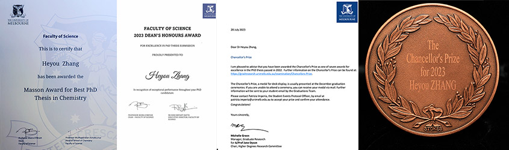

2025年6月20日
光子逻辑“与门“已投入运行！ 我们的学术论文已经上线！
我们的学术论文“基于光致变色分子的全光“与门（AND）”演示“有幸发表于《Advanced Functional Material》。完全可操作的全光逻辑与门概念验证。
Demonstration of an All-Optical AND Gate Mediated by Photochromic Molecules
Heyou Zhang, Max Gießübel, Pankaj Dharpure, Andrea Albert, Vira Niestierkina, Paul Mulvaney, Mukundan Thelakkat, Jürgen Köhler*,
Advanced Functional Materials, 2025, early view, 202507180.
 DOI: 10.1002/adfm.202507180
DOI: 10.1002/adfm.202507180
Abstract
本研究成功实现了一种基于光子的"与门"(AND)逻辑门系统。该系统所有操作均采用光学方式完成，完全不同于传统电子元件的工作原理。在原理验证实验中，研究团队采用了一种基于感光分子的设计方案：通过监测特定波长的光子是否存在来表征输入变量，并利用这些光子信号实现逻辑运算功能。这一创新方法为发展全光计算技术提供了重要参考。
引用并翻译自：
DOI: 10.1002/adfm.202507180
01.Jan.2025
我的第一个国际科研基金! (头一次成为一个项目的独立研究员（PI）)
 很荣幸我们的研究获得了德意志学术交流中心（DAAD）的资助，批准书号为PPP 57750753。
该项目是由拜罗伊特大学和墨尔本大学共同参与的德国-澳大利亚联合科研合作计划（Programm des Projektbezogenen Personenaustauschs Australien, PPP）。
本基金将持续两年，自2025年1月1日起至2026年12月31日止。
很荣幸我们的研究获得了德意志学术交流中心（DAAD）的资助，批准书号为PPP 57750753。
该项目是由拜罗伊特大学和墨尔本大学共同参与的德国-澳大利亚联合科研合作计划（Programm des Projektbezogenen Personenaustauschs Australien, PPP）。
本基金将持续两年，自2025年1月1日起至2026年12月31日止。
研究项目：用于新一代全光学逻辑处理组件的光控量子点阵列
2024年7月16日
纯光学的信息加密! 我们的学术论文已经上线！
我们的学术论文“利用光转换小球实现纯光学，可重复进行读取-写入-擦除循环的微纳米整列“有幸发表于《Advanced Optical Material》。纳米尺度下的浪漫情书！
Purely Optical, Reversible, Read‐Write‐Erase Cycling Using Photoswitchable Beads in Micropatterned Arrays
Heyou Zhang, Pankaj Dharpure, Michael Philipp, Mukundan Thelakkat, Paul Mulvaney, and Jürgen Köhler*,
Advanced Optical Materials, 2024, 2401029.
DOI: 10.1002/adom.202401029
摘要
 利用表面模板电泳沉积技术，我们创建了包含光开关 DAE 分子的聚合物小球阵列。
在光激发下，这些分子可以在强发光状态和弱发光状态之间进行可逆的单独切换，而不需要在分子系统内进行任何能量或电子转移过程。
这些光子单元的微图案阵列具有详细的光谱学特征，并在信号对比度和串扰方面进行了优化。
本文阐明了包括激光强度、波长和照射持续时间在内的最佳光学参数，并确定了在微图案阵列中创建可逆开/关循环的理想条件。
我们演示了 500 次开关循环，结果没有明显的对比度衰减。
通过选择性地将信息写入给定的光子单元，读取由此产生的发射信号模式，最后再次擦除信息，证明了处理二进制信息的能力，这反过来又证明了连续记录的可能性。
这项基础研究为利用空间排列整齐的光子单元构建复杂电路铺平了道路。
利用表面模板电泳沉积技术，我们创建了包含光开关 DAE 分子的聚合物小球阵列。
在光激发下，这些分子可以在强发光状态和弱发光状态之间进行可逆的单独切换，而不需要在分子系统内进行任何能量或电子转移过程。
这些光子单元的微图案阵列具有详细的光谱学特征，并在信号对比度和串扰方面进行了优化。
本文阐明了包括激光强度、波长和照射持续时间在内的最佳光学参数，并确定了在微图案阵列中创建可逆开/关循环的理想条件。
我们演示了 500 次开关循环，结果没有明显的对比度衰减。
通过选择性地将信息写入给定的光子单元，读取由此产生的发射信号模式，最后再次擦除信息，证明了处理二进制信息的能力，这反过来又证明了连续记录的可能性。
这项基础研究为利用空间排列整齐的光子单元构建复杂电路铺平了道路。
引用并翻译自：
DOI: 10.1002/adom.202401029
2024年2月1日
综述与展望：用电泳沉积法组装单纳米颗粒阵列的未来! 我们的学术论文已经上线！
我们的综述论文“电泳沉积法组装单纳米颗粒“有幸发表于《Langmuir》。 作为“电泳沉积法组装单纳米颗粒阵列”的相对权威，我们总结了目前已存在的相关研究进展和此方法在未来实际应用中的前进.
Electrophoretic Deposition of Single Nanoparticles
Heyou Zhang, Yawei Liu, Yue Dong, Arun Ashokan, Asaph Widmer-Cooper, Jürgen Köhler, and Paul Mulvaney*,
Langmuir, 2024, 40, 6, 2783–2791.
DOI: 10.1021/acs.langmuir.3c02951
摘要
 胶体颗粒在固体基底上的可控组装一直是胶体和表面科学领域的一大挑战。
在这片综述中，我们概述了电荷稳定的单纳米粒子的电泳沉积方法（EPD）。
我们提出将传统电泳沉积与纳米加工技术相结合，形成新型表面模板化的电泳沉积组装方法（STEPD），
以达到高效、普适和高保真地将各种纳米粒子组装成任意结构。
我们还将讨论当前胶体化学在 STEPD 组装 10 纳米以下纳米粒子和制造密集单粒子阵列方面的一些限制和挑战。
胶体颗粒在固体基底上的可控组装一直是胶体和表面科学领域的一大挑战。
在这片综述中，我们概述了电荷稳定的单纳米粒子的电泳沉积方法（EPD）。
我们提出将传统电泳沉积与纳米加工技术相结合，形成新型表面模板化的电泳沉积组装方法（STEPD），
以达到高效、普适和高保真地将各种纳米粒子组装成任意结构。
我们还将讨论当前胶体化学在 STEPD 组装 10 纳米以下纳米粒子和制造密集单粒子阵列方面的一些限制和挑战。
引用并翻译自：
DOI: 10.1021/acs.langmuir.3c02951
2023年12月25日
2023 - 丰收的一年!
在2023年，我非常荣幸的被授予了三项年度奖项。这是对我博士学习期间工作的极大认可，也是我未来科研发展的动力！
2023年度，梅森(Masson)最佳化学类博士毕业论文奖。 （Masson Award for Best PhD Thesis in Chemistry, Faculty of Science.）
2023年度，墨尔本大学，自然科学学部，院长荣誉奖。 （2023 Dean's Honours Award, Faculty of Science.）
2023年度，墨尔本大学，杰出博士毕业生奖. （The Chancellor's Prize for Excellence, University of Melbourne.）

2022年6月4日
一种“普适”的纳米晶体阵列直接组装方法! 我们的学术论文已经上线！
我们的学术论文“单纳米晶体直接组装的一般普适方法“有幸发表于《 Advanced Optical Materials》。我的的“基于电泳沉积的纳米颗粒直接组装方法”现在可以适用于不同种类的纳米材料啦！
A General Method for Direct Assembly of Single Nanocrystals.
Heyou Zhang, Yawei Liu, Arun Ashokan, Can Gao, Yue Dong, Calum Kinnear, Nicholas Kirkwood, Samantha Zaman, Fatemeh Maasoumi, Timothy D. James, Asaph Widmer-Cooper, Ann Roberts, and Paul Mulvaney*,
Advanced Optical Materials, 2022
DOI: 10.1002/adom.202200179
摘要
 将目前先进的纳米材料应用到实际器件中的一个先决条件是能够将这些合成好的纳米材料受控的组装到一个基底表面。
其目标是能够精确的定位纳米晶体，并且具有高可控性、可扩展性和普适性。
然而，大多数方法无法同时满足所有这些目标。
在我们的文章中，我们介绍一种基于表面模板电泳沉积（STED）的组装方法，以满足一个可靠的纳米晶体组装需求。
我们展示了各种类型的纳米晶体的可控沉积。包括不同形状和尺寸的金纳米晶体、磁性纳米晶体、荧光有机纳米粒子和半导体量子点等。
我们发现直径低于10纳米的纳米颗粒由于其较低的表面电荷和强布朗运动（低佩切特数）而无法被沉积。
研究表明，这一限制可以通过形成聚集的纳米晶体簇或通过二氧化硅包覆纳米晶体，从而增加其有效尺寸来规避在沉积过程中尺寸的限制。
将目前先进的纳米材料应用到实际器件中的一个先决条件是能够将这些合成好的纳米材料受控的组装到一个基底表面。
其目标是能够精确的定位纳米晶体，并且具有高可控性、可扩展性和普适性。
然而，大多数方法无法同时满足所有这些目标。
在我们的文章中，我们介绍一种基于表面模板电泳沉积（STED）的组装方法，以满足一个可靠的纳米晶体组装需求。
我们展示了各种类型的纳米晶体的可控沉积。包括不同形状和尺寸的金纳米晶体、磁性纳米晶体、荧光有机纳米粒子和半导体量子点等。
我们发现直径低于10纳米的纳米颗粒由于其较低的表面电荷和强布朗运动（低佩切特数）而无法被沉积。
研究表明，这一限制可以通过形成聚集的纳米晶体簇或通过二氧化硅包覆纳米晶体，从而增加其有效尺寸来规避在沉积过程中尺寸的限制。
引用并翻译自：
DOI: 10.1002/adom.202200179
2021年8月31日
金纳米棒是怎样练成的! 我们的学术论文已经上线！
我们的学术论文“金纳米棒的生长-小角度X光散射研究“有幸发表于《 The Journal of Physical Chemistry C》.
Growth of Gold Nanorods: A SAXS Study.
Susanne Seibt, Heyou Zhang, Stephen Mudie, Stephan Förster, and Paul Mulvaney*,
The Journal of Physical Chemistry C, 2021,125, 36, 19947-19960.
DOI: 10.1021/acs.jpcc.1c06778
摘要
 利用同时进行的原位光学光谱和时间分辨的小角X射线散射（SAXS），我们直接监测了使用氢醌作为还原剂的几乎单分散的金纳米棒的种子生长。
与抗坏血酸离子相比，使用氢醌作为还原剂的金棒的生长速度要慢得多，这使得沿纵向和横向的生长速度可以被独立监测。
稳定CTAB层的厚度（3.2±0.3纳米）也已被单独考虑。
我们发现，增加四氯金酸氢盐（III）的浓度会产生较长的棒，而相反，增加对苯二酚的浓度会降低最终的长宽比。
金棒的最终数量小于种子颗粒的初始数量，并且在存在较大浓度的氯化氢时减少。
SAXS数据显示，早期的形态从球形过渡到椭圆，然后再过渡到球形封顶的圆柱体。
生长曲线至少表现出三种不同的状态：初始阶段包括球形种子的生长，随后是对称性的破坏和缓慢的伸长。
第三阶段的特点是快速的棒状生长和长宽比的增加。
这一过程在时间上与最初的对称性破坏有很好的区分，但通常发生在使用氢醌作为还原剂的棒状物直径约为6纳米的时候。
这些结果为Edgar等人提出的 "爆米花模型 "提供了定性支持[通过随机的 "爆米花 "机制形成金纳米棒。
利用同时进行的原位光学光谱和时间分辨的小角X射线散射（SAXS），我们直接监测了使用氢醌作为还原剂的几乎单分散的金纳米棒的种子生长。
与抗坏血酸离子相比，使用氢醌作为还原剂的金棒的生长速度要慢得多，这使得沿纵向和横向的生长速度可以被独立监测。
稳定CTAB层的厚度（3.2±0.3纳米）也已被单独考虑。
我们发现，增加四氯金酸氢盐（III）的浓度会产生较长的棒，而相反，增加对苯二酚的浓度会降低最终的长宽比。
金棒的最终数量小于种子颗粒的初始数量，并且在存在较大浓度的氯化氢时减少。
SAXS数据显示，早期的形态从球形过渡到椭圆，然后再过渡到球形封顶的圆柱体。
生长曲线至少表现出三种不同的状态：初始阶段包括球形种子的生长，随后是对称性的破坏和缓慢的伸长。
第三阶段的特点是快速的棒状生长和长宽比的增加。
这一过程在时间上与最初的对称性破坏有很好的区分，但通常发生在使用氢醌作为还原剂的棒状物直径约为6纳米的时候。
这些结果为Edgar等人提出的 "爆米花模型 "提供了定性支持[通过随机的 "爆米花 "机制形成金纳米棒。
引用并翻译自：
DOI: 10.1021/acs.jpcc.1c06778
2021年2月3日
我们的学术论文已经上线
我们的学术论文“垂直取向的金纳米棒整列的直接组装方法”有幸发于《Advanced Functional Material》。
Direct Assembly of Vertically Oriented, Gold Nanorod Arrays.
Heyou Zhang, Yawei Liu, Muhammad Faris Shahin Shahidan, Calum Kinnear, Fatemeh Maasoumi, Jasper Cadusch,
Eser Metin Akinoglu, Timothy D. James, Asaph Widmer-Cooper, Ann Roberts, Paul Mulvaney*,
Advanced Functional Materials, 2021, 31, 2006753.
DOI: 10.1002/adfm.202006753
摘要
 尽管许多纳米级材料，如量子点和金属纳米晶体表现出与尺寸有关的光学特性。但由于目前没有高精度、大规模沉积单个纳米晶体的有效方法，
因此很难将它们实际运用到光学或电子装置中。尤其需要注意的是，由于纳米晶体的光学特性通常具有强烈的各向异性。
所以在纳米晶体的组装过程中需要精确的控制单个纳米晶体的沉积取向。这篇文章中报告了一种基于电泳沉积（EPD）的方法来精确组装垂直取向的单体金纳米棒方法。
研究表明，在沉积过程中，金纳米棒的方向是由电场沿棒所诱导的电偶极矩控制的。耗散粒子动力学模拟表明，该偶极矩的大小由纳米棒周围的液相电双层的极化率所主导。
由于金纳米棒等离子体效应的选择性激发，我们所沉积的垂直金纳米棒阵列表现出色的光学特性。我们的EPD方法能够组装的超过一百万单金纳米棒的高密度整列。
从而形成肉眼可见的，平方毫米尺寸下的垂直纳米棒阵列。
尽管许多纳米级材料，如量子点和金属纳米晶体表现出与尺寸有关的光学特性。但由于目前没有高精度、大规模沉积单个纳米晶体的有效方法，
因此很难将它们实际运用到光学或电子装置中。尤其需要注意的是，由于纳米晶体的光学特性通常具有强烈的各向异性。
所以在纳米晶体的组装过程中需要精确的控制单个纳米晶体的沉积取向。这篇文章中报告了一种基于电泳沉积（EPD）的方法来精确组装垂直取向的单体金纳米棒方法。
研究表明，在沉积过程中，金纳米棒的方向是由电场沿棒所诱导的电偶极矩控制的。耗散粒子动力学模拟表明，该偶极矩的大小由纳米棒周围的液相电双层的极化率所主导。
由于金纳米棒等离子体效应的选择性激发，我们所沉积的垂直金纳米棒阵列表现出色的光学特性。我们的EPD方法能够组装的超过一百万单金纳米棒的高密度整列。
从而形成肉眼可见的，平方毫米尺寸下的垂直纳米棒阵列。
引用并翻译自：
DOI: 10.1002/adfm.202006753
2021年1月1日
 由金纳米棒阵列所组成的墨尔本大学校徽
由金纳米棒阵列所组成的墨尔本大学校徽
作为我们在2018年所发表的学术论文的补充(Direct Assembly of Large Area Nanoparticle Arrays.
ACS Nano, 2018, 12, 8, 7529–7537
DOI: 10.1021/acsnano.8b02932 )。我们呈现一个墨尔本大学的微米级校徽。
它是由精确的6205个金纳米棒通过我们的直接EPD组装方法组装而成的。
由于纳米级的精确控制能力，所有的金纳米棒通过我们的直接EPD组装方法排列在同一方向上。
由于金纳米棒沿长轴和短轴的不对称光学特性，在暗视野显微镜下更具偏振镜的偏振方向，标志的颜色从红色转变到绿色再回到红色，如此往复。
版权所有。